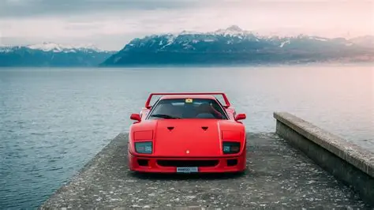

El SVJ lleva un motor V12 atmosférico con aerodinámica activa para lograr un rendimiento extremo. Sucesor del lamborghini SV y S fue lanzado en 2018 revoluciono el mundo de la automoción.
Supercoches icónicos: Ferrari F40, Lamborghini SVJ y Pagani Huayra
Ferrari F40

El F40 fue creado para celebrar los 40 años de Ferrari.
Es famoso por su ligereza y su motor V8 biturbo, es uno de los coches mas iconicos de la marca y se ha revalorizado mucho desde su lanzamiento.
Más información: Ferrari F40
Lamborghini Aventador SVJ
El SVJ lleva un motor V12 atmosférico con aerodinámica activa para lograr un rendimiento extremo. Sucesor del lamborghini SV y S fue lanzado en 2018 revoluciono el mundo de la automoción.
Más información: Lamborghini SVJ
Pagani Huayra

El Huayra es una obra maestra artesanal con un V12 biturbo y materiales de lujo como fibra de carbono, su produccion y distribucion empezo en 2011.
Más información: Pagani Huayra
Comparativa rápida
| Modelo | Motor | Potencia |
|---|---|---|
| Ferrari F40 | V8 biturbo | 478 CV |
| Lamborghini SVJ | V12 atmosférico | 770 CV |
| Pagani Huayra | V12 biturbo | 720 CV |